RA Configuration wizard
RA Configuration wizard is a setup GUI tool for redundancy analysis. You can use this wizard to generate specified setup files based on device RA layout and other settings.
Related setup files
The RA Configuration wizard can automatically generate these files. If you want to set up these files further, you can open and modify these files directly.
- RA configuration file (.xml)
This control file lists all other files being used for reference. It can also contain general parameter definitions. See Redundancy analysis configuration file for more information about the RA configuration file.
- RA algorithm control file (.xml)
This control file contains basic aspects of Successive algorithm. See Control file for the Successive algorithm for more information about the algorithm control file.
- DUT representation file (.drs)
This DUT representation file contains the structure of DUT ready for the redundancy analysis algorithm to learn. See DUT representation file for more information about the DUT representation file.
- Map Converter file (.so)
This file specifies the Map Converter file (compiled binary) under DEVDIR/mtp/bitmap/converters/bin/. It is not used to specify "-EL7.so".
RA General Settings page
You can right-click your device to select to open a new RA Configuration wizard.
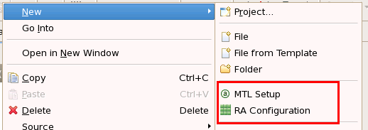
The following window is opened.
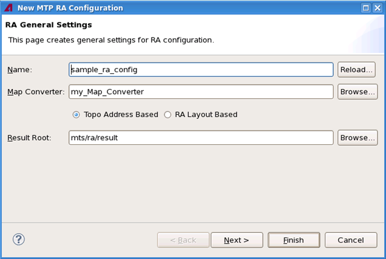
You can use this page to create a new RA configuration .xml file.
On this page, you can set up these parameters:
- Name: You can specify an RA configuration file name.
- Map Converter: You can specify a map converter library name which is
used by the current RA configuration. The default value is
my_Map_Converter.
You can click to select one of two algorithm methods provided by the map converter:
- Topo Address Based (TOPO_ADDR_BASED): The map converter provides this algorithm with input based on topological addresses.
- RA Layout Based (RA_LAYOUT_BASED): This
algorithm is based on RA layout information, such as data bit group, segment, column and
row.
The default value is Topo Address Based.
- Result Root: You can define a directory where the result files of redundancy analysis are saved. Some files may be saved in subfolders under this directory. The default directory is mts/ra/result.
You can click Next to enter the next page RA DUT Representation Basic Settings when you have finished the setup.
RA DUT Representation Basic Settings page
On the RA DUT Representation Basic Settings page, you can define DUT representation parameters.
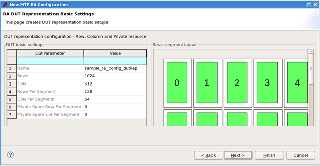
This page has two parts:
- DUT basic settings on the left
- Basic segment layout on the right
On the DUT basic settings part, you can set up the following parameters for DUT:
- Name: Define a DUT representation xml file name. The default name is sample_ra_config_dutRep, which means the created file name will be sample_ra_config_dutRep.xml.
- Rows: Define a row number of device layout. The default value is 1024.
- Cols: Define a column number of device layout. The default value is 512.
- Rows Per Segment: Define a row number per segment. The default value is 128.
- Cols Per Segment: Define a column number per segment. The default value is 64.
- Private Spare Row Per Segment: Define a private spare row resource per segment. The default value is 0.
- Private Spare Col Per Segment: Define a private spare column resource per segment. The default value is 0.
Visualization and synchronization
The Basic segment layout is a graphic tool for visualizing the basic DUT layout used for RA configuration. This layout is automatically synchronized with the parameters in the DUT basic settings. If you change any settings in the DUT basic settings, such as Rows, Cols, or Row Per Segment, the layout chart will refresh at once.
DUT Representation error checking
If any DUT Representation parameter setup is not correct, that will make chart generation and RA configuration fail. A DUT Representation error checking function allows you to know what is wrong with your parameter setup.
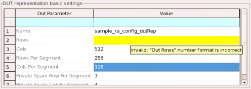
Limit range
If you enter a parameter value which is over the limit, it will be highlighted in yellow color. For example, if Rows Per Segment value is 128, the valid value for Private Spare Row Per Segment must be within [1, 128]. Therefore, 129 is a wrong number. If you put the mouse pointer on the wrong value, a tip will pop up to indicate the reason.
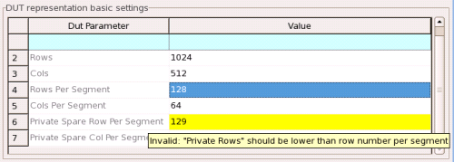
Division correlation
These parameters in pair are related in value:
- Rows and Rows Per Segment
- Cols and Cols Per Segment
- Rows Per Segment and Private Spare Row Per Segment
- Cols Per Segment and Private Spare Col Per Segment
The former in pairs can be divided by the latter. Otherwise, the value will be highlighted in yellow to indicate that your entry is not correct. For example, if you set up Cols to 513 and Cols Per Segment is 128, it is obvious that 513 cannot be divided by 128. This setup is invalid because it is against the division correlation rule.
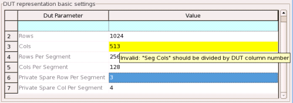
RA DUT Representation Advanced Settings page
On the RA DUT Representation Basic Settings page, click the Next button to enter the RA DUT Representation Advanced Settings page.
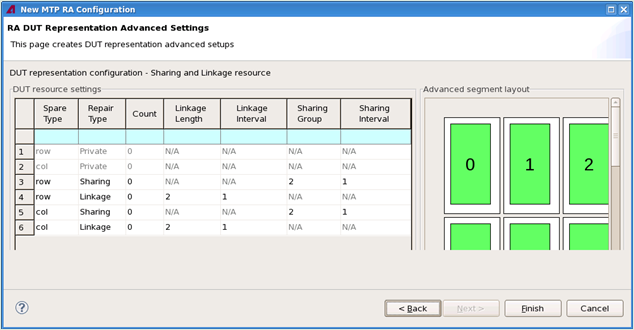
On the RA DUT Representation Advanced Settings page, you can define advanced parameters for DUT representation, including linkage and sharing resource definition.
This page has two parts:
- DUT resource settings
- Advanced segment layout
Sharing and linkage
The DUT resource settings part has a sharing and linkage table.
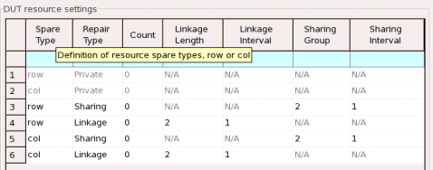
You can set up the following parameters in the table:
- Spare Type: The spare resource repair target.
- row: Repair the row only.
- col: Repair the column only.
- Repair Type: The category of current spare resources.
- Private: The resource is a dedicated spare resource inside each segment.
- Sharing: The resource can be shared between different segments by
rules.
For example, a resource is shared between 1, 3, which means that this resource can only repair segment 1 or 3 at the same time.
- Linkage: The resource can connect different segments together by
rules.
For example, a resource is linkage between 1, 3, which means that this resource can repair both segment 1 and 3 at the same time.
- Count: The number of resource. Based on Spare Type, it must be smaller than Rows Per Segment or Cols Per Segment.
- Linkage Length: The linkage resource repair length.
- Linkage Interval: The linkage resource repair
interval.
Example:
Linkage Length = 4; Linkage Interval = 1, Linkage list [0, 1, 2, 3]
Linkage Length = 4; Linkage Interval = 2, Linkage list [0, 2, 4, 6]
Linkage Length = 4; Linkage Interval = 4, Linkage list [0, 4, 8, 12]
- Sharing Group: The sharing resource repair interval.
- Sharing Interval: The sharing resource repair
interval.
Example:
Sharing Group = 4; Sharing Interval = 1, Sharing list [0, 1, 2, 3]
Sharing Group = 4; Sharing Interval = 2, Sharing list [0, 2, 4, 6]
Sharing Group = 4; Sharing Interval = 4, Sharing list [0, 4, 8, 12]
Advanced segment layout
The Advanced segment layout is a graphic tool for analyzing the linkage and sharing layout. This layout is automatically synchronized with the parameters in the left table. If you set up any parameter in the table, such as Sharing Group, Linkage Length, Linkage Interval, or Count, the layout will refresh at the same time.
Visualization
You can do the following operations to change the view of layout scope:
- Zoom in or zoom out the chart.
- Pull the scroll bar down or up.
- Hold and drag within the chart.
Inside the chart, you can click to do repair resources mapping on the segment layout. The mapping resources will be highlighted in yellow color. You can put the mouse pointer on a spare resource to check the details.
Sharing and linkage error checking
If a sharing and linkage parameter setup is not correct, that will make chart generation and RA configuration fail. The table has an error checking function to allow you to know what is wrong with your parameter setup.
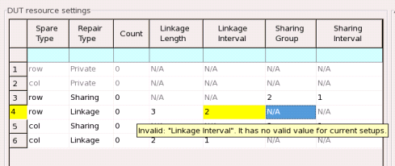
Limit range
If the value that you enter is over its limit, the table will report this error and highlight the value in yellow. For example, a linkage length must be smaller than Rows Per Segment. Otherwise, it will report the error.
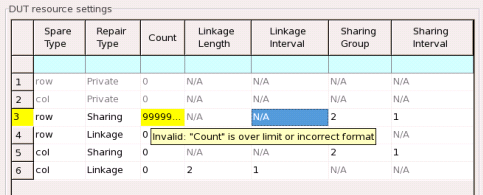
Division correlation
Linkage length and interval values are related to segment numbers. A segment number can be divided by its related linkage length or interval. For example, a linkage length is 3 and a linkage interval is 1 while the segment number is 64. This setup is invalid according to the division correlation. The segment number 64 cannot be divided by the linkage length 3.
RA compilation and result
Once you have set up all values correctly, you can click the Finish button to start the compilation process.
A confirmation dialog pops up for you to confirm to do the compilation.
If all configuration files have already existed, the following Confirm dialog box will be displayed.

If some configuration files have existed and some others are new, the following Confirm dialog box will be displayed.
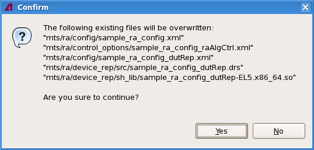
Compilation success
When the compiling process has done successfully, an RA configuration compilation success dialog pops up. Click OK to confirm.
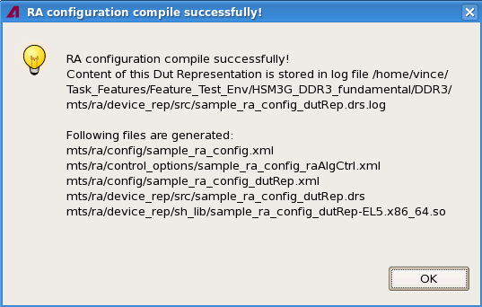
The successful result information appears in the MTP Build Console.
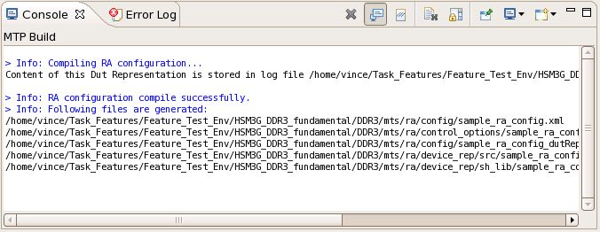
A corresponding .drs file will show in the Editor view of SmarTest.
Compilation failure
If the process has failed, a compilation failure dialog pops up. Click OK to confirm.
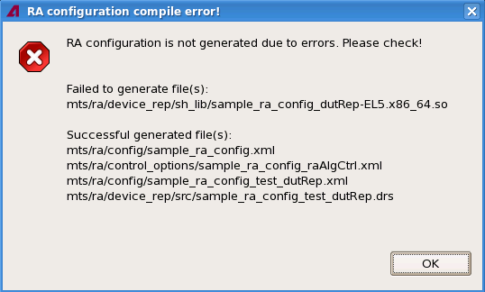
The failed result information appears in the MTP Build Console.
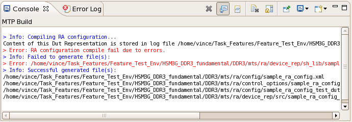
Functional changes
- Introduced in MTP 3.3.3